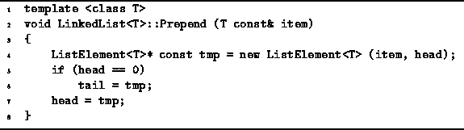

Data Structures and Algorithms
with Object-Oriented Design Patterns in C++
Data Structures and Algorithms
with Object-Oriented Design Patterns in C++
To prepend an element to a linked list
is to insert that element in front of the first element of the list.
The prepended list element becomes the new head of the list.
Program  gives the algorithm for the
Prepend member function of the LinkedList<T> class.
gives the algorithm for the
Prepend member function of the LinkedList<T> class.

Program: LinkedList<T> Class Prepend Function Definition
The Prepend function first allocates a new ListElement<T>. Its datum field is initialized with the value to be prepended to the list, item; and the next field is made to point to the first element of the existing list by initializing it with the value of the current head pointer. If the list is initially empty, both head and tail are made to point at the new element. Otherwise, just head needs to be updated.
Note, operator new calls the constructor for objects of
class ListElement<T>.
In Section the running time of the constructor
was determined to be  .
And since the body of the Prepend function adds
only a constant amount of work,
the running time of the Prepend function is also
.
And since the body of the Prepend function adds
only a constant amount of work,
the running time of the Prepend function is also  .
If T is one of the built-in types,
then its copy constructor does a constant amount of work,
and the running time of Prepend simplifies to O(1).
.
If T is one of the built-in types,
then its copy constructor does a constant amount of work,
and the running time of Prepend simplifies to O(1).
 Copyright © 1997 by Bruno R. Preiss, P.Eng. All rights reserved.
Copyright © 1997 by Bruno R. Preiss, P.Eng. All rights reserved.